Day 27｜將私有雲服務安全發布至網際網路：Cloudflare DNS、CDN、WAF 與 Full (strict)
對應文章：Day 27｜將私有雲服務安全發布至網際網路：Cloudflare DNS、CDN、WAF 與 Full (strict)
完成建置後，可接著執行 Day 27 額外實作｜公開 HTTPS 驗證與故障恢復量測，補齊完整證據鏈與恢復時間。
本日沿用既有的 Nginx／Web Backend 與 Web VIP 10.77.20.10，新增公開 DNS、Cloudflare Proxy、Origin TLS、WAN TCP 443 與外部驗證。
本日操作順序
- 在 GoDaddy 搜尋並購買根網域，完成帳號與聯絡資料驗證。
- 記錄正式網域、Origin 公網 IPv4、DDNS Hostname 與目前狀態。
- 將網域的權威 DNS 從 GoDaddy 委派給 Cloudflare。
- 依公網位址的維護方式建立橘雲 A 或 CNAME Record，但先不宣告完成。
- 建立 Cloudflare Origin Certificate，安全部署到 proxy01、proxy02。
- 讓兩台 Nginx 同時提供正式 Hostname 的 TCP 443。
- 在 OPNsense 只允許 Cloudflare IPv4 網段進入 Origin TCP 443。
- 啟用 Full (strict)，並讓 Nginx 安全還原 Client IP。
- 從真正外部網路測試公開 HTTPS、Origin Bypass 與 Proxy 接管。
0. 前置條件與參數
本日需要以下條件：
- 已有 GoDaddy 帳號與可收信的聯絡電子郵件；已持有網域者可略過第 1 節。
- 上網路徑具有可從網際網路連入的公網 IPv4。
web.lab.home已解析到10.77.20.10，內部 HTTP Health Check 正常。- proxy01 為
10.77.20.21，proxy02 為10.77.20.22。 - 兩台 Nginx、Keepalived 與 Web Backend 都為 Active。
實作前先決定公開 Hostname。下文使用 app.example.com，請在貼上指令或設定前改成自己的真實網域。不要把 example.com 原樣保留在實機設定。本日只需購買 example.com 這類根網域；app.example.com 是後續由 DNS Record 建立的子網域，不需另行購買。
記錄下列參數，但不要把真實公網 IPv4、憑證私鑰或 Cloudflare Token 提交到 Git：
公開 Hostname：app.example.com
Origin 公網 IPv4：實際公網 IPv4
公網位址由固定 A Record 或 DDNS 維護：A／DDNS
DDNS Hostname（未使用則留空）：例如 origin-ddns.example.net
OPNsense WAN 是否直接持有公網 IPv4：是／否
上游路由器是否另做 Port Forward：是／否
在 client01 確認當前內部服務：
sudo apt update
sudo apt install -y curl dnsutils
getent hosts web.lab.home
curl -fsS http://web.lab.home/health
在 proxy01、proxy02 各自確認：
sudo nginx -t
systemctl is-active nginx keepalived
ip -br address show eth0
先在 OPNsense 進入 System → Configuration → Backups，下載當前 config.xml。再記錄 GoDaddy 原 Nameserver、DNSSEC 狀態與現有 DNS Record，這些是委派失敗時的回復依據。
1. 在 GoDaddy 購買網域
已持有可修改 Nameserver 的網域時，直接進入第 2 節。本節只購買網域註冊服務，不購買 GoDaddy 網站主機、網站建置工具、企業信箱或 SSL 憑證。後續會由 Cloudflare 提供公開 Edge TLS，並使用 Cloudflare Origin Certificate 保護 Cloudflare 到 Nginx 的連線。
1.1 登入帳號並搜尋根網域
- 開啟 GoDaddy 網域搜尋，登入已有帳號，或建立一個新帳號。
- 帳號使用可長期接收續約、驗證與安全通知的電子郵件，並啟用兩步驗證。
- 在搜尋欄輸入想註冊的根網域，例如
ironlab-example.com。不要輸入https://、路徑或app.子網域。 - 搜尋結果顯示可註冊後，再次檢查拼字與頂級網域（例如
.com），然後按Add to Cart、Make It Yours或當前畫面上的同義按鈕。 - 不要因為搜尋結果顯示相似名稱，就把多個不需要的網域一起加入購物車。
GoDaddy 的頁面文字會因地區、語言、帳號與促銷活動而不同。以「選擇正確根網域並加入購物車」為判斷依據，不要依賴某個促銷按鈕的固定名稱。
1.2 檢查註冊期間、續約價格與加購項目
進入購物車後，先不要直接付款，逐項檢查：
- 網域名稱與頂級網域完全正確。網域註冊完成後，不能像一般商品一樣直接改名。
- 註冊年限符合需求。部分首年促銷需要一次購買多年，不能只看首年顯示價格。
- 同時檢查「今日應付總額」與「後續每年續約價格」，並確認幣別、稅額與折扣條件。
- 根據自己的續約政策決定是否啟用自動續約。若關閉，必須自行維護到期提醒；若啟用，必須維護有效的付款方式。
- 移除本 Lab 不需要的網站主機、網站建置工具、企業信箱、付費 SSL 憑證與其他加購項目。
- 區分 Domain Privacy 與 Domain Protection。符合資格的 GoDaddy 網域會有基本 Domain Privacy，用來隱藏公開 WHOIS 中的註冊人聯絡資料；額外的 Domain Protection 是可選付費保護，會對更換 Nameserver 等高風險操作加上身分驗證。
本日需要改用 Cloudflare Nameserver；若購買 Domain Protection，第 3 節修改 Nameserver 時會多一次一次性密碼或兩步驗證，這是預期行為，不需關閉保護。
1.3 完成付款
- 進入
Checkout，填寫或選擇付款方式與帳單資料。 - 付款前最後核對網域拼字、註冊期間、自動續約、加購項目與應付總額。
- 送出訂單後等待付款完成頁面，保留收據與訂單編號。付款卡號、帳單地址、電話、電子郵件與訂單編號均不得加入文件或提交至 Git。
1.4 驗證網域已進入帳號
- 進入 GoDaddy
Domain Portfolio，確認剛購買的根網域已出現。 - 開啟該網域的
Domain Settings，核對到期日、自動續約狀態、聯絡資料、Domain Privacy 與 Domain Protection 狀態。 - 若帳號顯示聯絡資料驗證提示，在
Domain Portfolio重新傳送確認信，再到註冊人信箱按下驗證連結。新註冊資料未經驗證時，網域可能顯示等待驗證狀態。 - 進入
DNS或 Nameservers 管理畫面，確認自己對該網域具有變更 Nameserver 的權限。這一步不建立 GoDaddy 網站，也不需要先設定 GoDaddy 主機空間。
完成條件是：根網域出現在 Domain Portfolio、聯絡資料已驗證，並可以進入 Nameserver 管理畫面。接下來才把這個網域加入 Cloudflare。
2. 將既有網域連接到 Cloudflare
本節將 Cloudflare 設為這個網域的權威 DNS 與 Reverse Proxy；GoDaddy 繼續管理網域註冊、續約與付款。
2.1 進入新增站點並選擇連接網域
- 登入 Cloudflare Dashboard，先選擇要使用的 Account。
- 在左側進入
Domains／網域。 - 按
Add a site／新增站點。
進入「新增站點」後，Cloudflare 會顯示三個不同操作：
連接網域
讓您的網站更快、更安全、更可靠
轉移網域
將您的網域註冊搬遷至 Cloudflare，並節省續約費用
購買網域
以零加價費用註冊新網域
接著選取免費方案
本日選擇 連接網域。這個選項會把既有的 GoDaddy 網域加入 Cloudflare，建立 Cloudflare Zone，並在後續提供要設定到 GoDaddy 的權威 Nameserver。
不要選擇 轉移網域。該選項會把網域註冊、續約與付款關係從 GoDaddy 搬到 Cloudflare Registrar，需要網域解鎖與 Authorization Code，不屬於本日實作。也不要選擇 購買網域，因為第 1 節已經在 GoDaddy 完成購買。
2.2 輸入根網域與匯入選項
- 在
Domain name／網域名稱輸入已購買的根網域，例如example.com或實際使用的xianmantang.shop。 - 不要輸入
https://、URL Path，也不要只輸入app.example.com這類子網域。 Import DNS records／匯入 DNS 記錄選Automatic／自動，讓 Cloudflare 先掃描現有 DNS Record。AI training and search policy／AI 訓練與搜尋政策不影響 DNS 委派、Cloudflare Proxy 或 Origin TLS。本 Lab 可以保留畫面目前值，之後再依網站內容政策調整 Search、AI Proxy 與 Training Crawler。- 畫面若詢問網域是否購自 Shopify、Wix 或 Block，因本系列使用 GoDaddy，選擇否或繼續一般 Domain Onboarding 流程。
- 按
Continue／繼續，選擇要使用的 Plan；本 Lab 可使用 Free Plan。
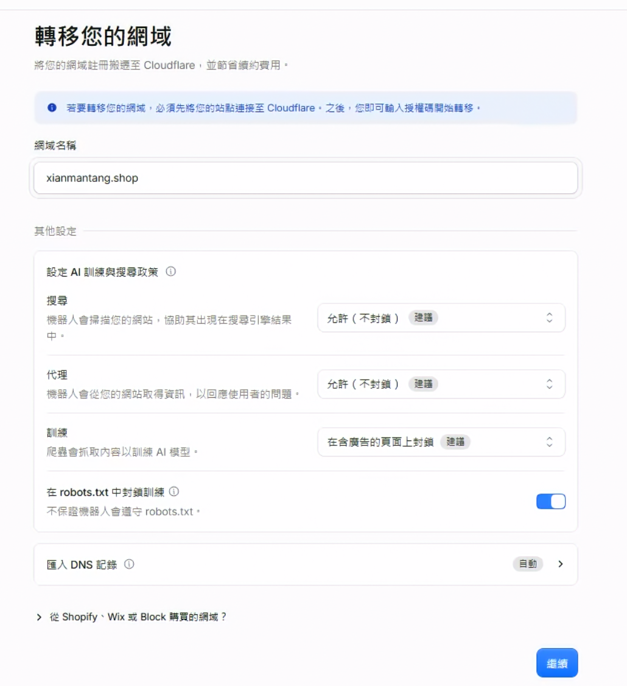
圖（一）在 Cloudflare 連接既有根網域；畫面中的搜尋與 AI 訓練政策不影響本次 DNS、Proxy 與 Origin TLS 設定
進入下一頁後，Cloudflare 會顯示掃描到的 A、AAAA、CNAME、MX 與 TXT Record。逐筆核對，Quick Scan 不保證找到所有既有 Record。缺少的 Record 要先補齊，尤其不要在尚未確認 Mail、驗證 TXT 與其他既有服務時就更換 Nameserver。
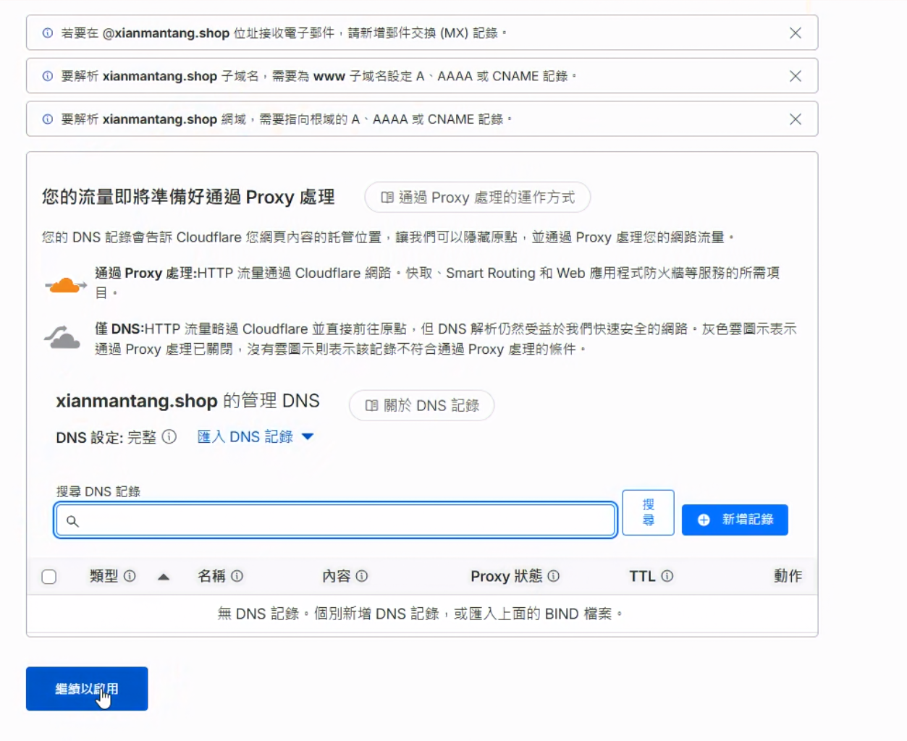
圖（二）新購網域沒有既有 DNS Record 時，清單可以是空白；已有服務的網域必須先補齊郵件與驗證記錄
核對完成後繼續，記錄 Cloudflare 指派的兩個 Nameserver，例如 name1.ns.cloudflare.com 與 name2.ns.cloudflare.com。實際值以目前 Dashboard 顯示為準。
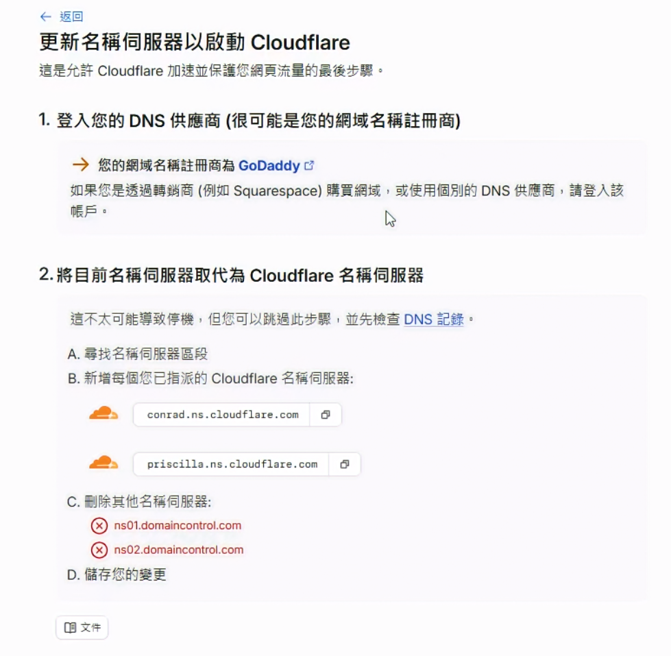
圖（三）Cloudflare 為本次網域指派兩台權威名稱伺服器，兩個值都要完整複製到 GoDaddy
完成本節時，Cloudflare Zone 可以先顯示 Pending Nameserver Update 或相近狀態。這表示 Zone 已建立，正在等待 GoDaddy 更換 Nameserver。
如果 GoDaddy 目前已對這個網域啟用 DNSSEC，先依 Cloudflare 畫面指示移除註冊層的舊 DS Record，等待原 DS TTL 到期，並以 dig DS example.com +short 確認查無結果後，再更換 Nameserver。Zone 變成 Active 後，由 Cloudflare 啟用新 DNSSEC，並將 Cloudflare 提供的新 DS Record 加回註冊商。
3. 在 GoDaddy 變更 Nameserver
- 登入 GoDaddy，開啟
Domain Portfolio。 - 選擇實際網域，進入
DNS。 - 在
Nameservers選擇使用自定 Nameserver。 - 移除原 Nameserver，填入 Cloudflare 指派的兩個值。
- 儲存後回 Cloudflare 按
Check nameservers now。
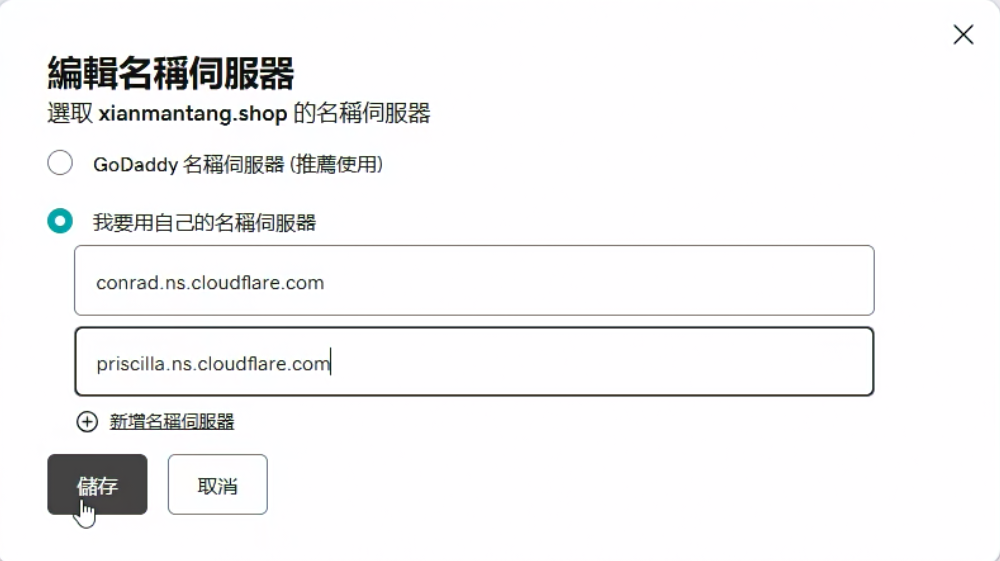
圖（四）GoDaddy 使用自訂名稱伺服器，內容與 Cloudflare 指派的兩個值一致
Nameserver 委派不一定立即在所有 Resolver 生效。本次實作約等待一小時後，Cloudflare Zone 才顯示 Active；實際時間會受註冊商處理與 DNS 快取影響。Zone 顯示 Active 前，不要刪除舊 DNS 記錄或將舊服務當成已切換。
從任一可使用 dig 的主機檢查委派：
dig NS example.com +short
dig +trace NS example.com
輸出必須是 Cloudflare 指派的 Nameserver，而且 Cloudflare Dashboard 必須顯示 Zone Active。
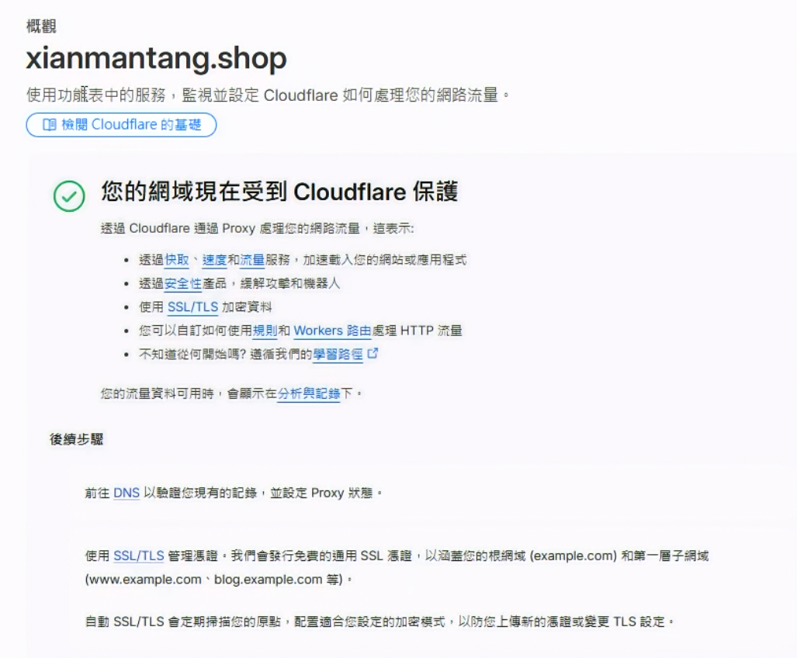
圖（五）名稱伺服器委派生效後，Cloudflare Zone 進入 Active 狀態
4. 建立橘雲公開 Record
在 Cloudflare 進入 DNS → Records。固定公網 IPv4 可建立 A Record：
- Type：
A。 - Name：
app。 - IPv4 address：Origin 的實際公網 IPv4。
- Proxy status：
Proxied（橘雲）。 - TTL：
Auto。
本次環境的公網 IPv4 由 DDNS Hostname 維護，因此示範改用 CNAME Record：
- Type：
CNAME。 - Name：
app。 - Target：實際 DDNS Hostname。
- Proxy status：
Proxied（橘雲）。 - TTL：
Auto。
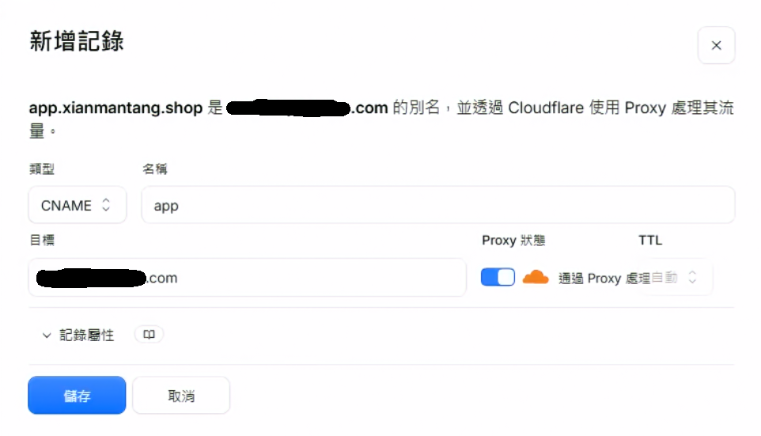
圖（六）本次以橘雲 CNAME 指向既有 DDNS Hostname，由 DDNS 負責追蹤異動的公網 IPv4
兩種方式只選一種。固定公網 IPv4 使用 A Record；會變動的公網 IPv4 先由 DDNS 更新目標 Hostname，再讓 app 的 CNAME 指向該名稱。Cloudflare 會預設展平 Proxied CNAME，公開查詢回覆 Cloudflare Anycast IP。DDNS Hostname 必須持續解析到目前的 Origin 公網 IPv4，避免 Cloudflare 回源到舊位址。
本 Lab 的 Cloudflare 回源與 OPNsense WAN 路徑都使用 IPv4。Cloudflare IPv6 Compatibility 預設會讓橘雲主機名稱同時提供 Edge IPv6，因此外部查詢仍可能取得 Cloudflare 的 AAAA；這不表示 Origin 已具備 IPv6。日後若讓 Origin 使用 IPv6，必須一起建立 Cloudflare IPv6 Alias、OPNsense IPv6 Rule 與 Origin IPv6 Listener。
在外部 Resolver 查詢：
dig app.example.com A +short
橘雲生效後，查詢結果應是 Cloudflare Anycast IPv4，不應直接顯示 Origin 公網 IPv4。這項結果只證明 DNS 與 Proxy Status；Origin HTTPS 需由後續 TLS 測試驗證。
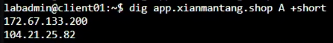
圖（七）Proxied CNAME 經 Cloudflare 展平後，公開 A 查詢回覆 Cloudflare Anycast IPv4
5. 建立 Cloudflare Origin Certificate
在 Cloudflare 進入 SSL/TLS → Origin Server，按 Create Certificate：
- 選擇由 Cloudflare 產生 Private Key 與 CSR。
- Private Key Type 使用
RSA (2048)，便於與常見 Nginx 環境相容。 - Hostnames 至少包含真實公開 Hostname，例如
app.example.com。 - 選擇符合維運政策的有效期，並另外建立到期監控。
- 按
Create，複製 Origin Certificate 與 Private Key。
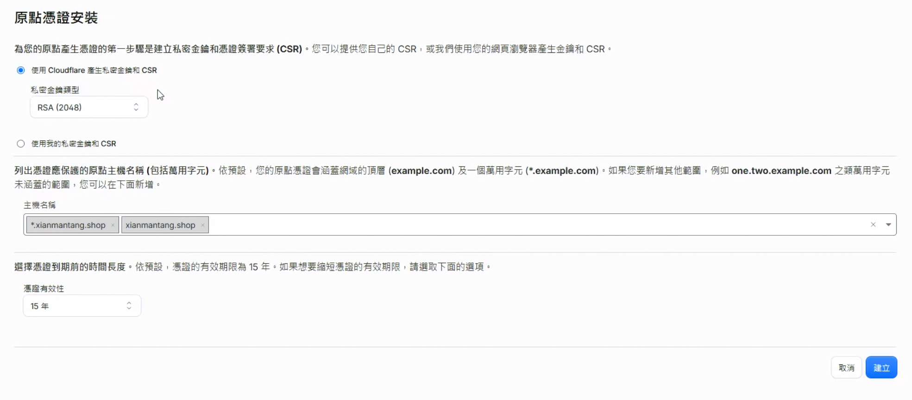
圖（八）建立 RSA Origin Certificate，主機名稱涵蓋根網域與第一層子網域
Private Key 只會在建立時顯示，請立即保存到受保護的位置。私鑰不得加入文件或提交至 Git。
在 proxy01 建立目錄與檔案：
sudo install -d -o root -g root -m 0750 /etc/nginx/tls
sudo nano /etc/nginx/tls/iron-origin.crt
sudo nano /etc/nginx/tls/iron-origin.key
將 Certificate 貼入 iron-origin.crt，Private Key 貼入 iron-origin.key。按 Ctrl+O、Enter、Ctrl+X 儲存後執行：
sudo chown root:root /etc/nginx/tls/iron-origin.crt /etc/nginx/tls/iron-origin.key
sudo chmod 0644 /etc/nginx/tls/iron-origin.crt
sudo chmod 0600 /etc/nginx/tls/iron-origin.key
sudo openssl x509 -in /etc/nginx/tls/iron-origin.crt \
-noout -subject -issuer -dates -ext subjectAltName
sudo openssl pkey -in /etc/nginx/tls/iron-origin.key -check -noout
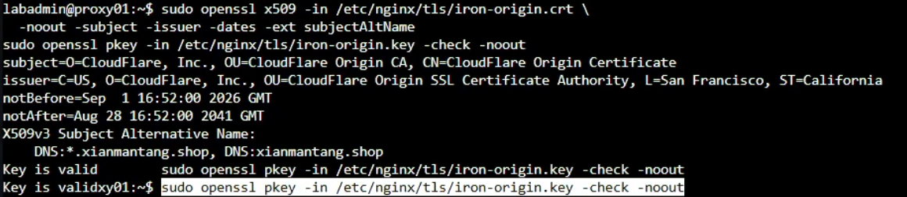
圖（九）Origin Certificate 涵蓋實際網域，私鑰檢查同時回傳 Key is valid
憑證的 Subject Alternative Name 必須包含真實公開 Hostname。接著在 proxy02 重複同一節，安裝同一張 Certificate 與對應 Private Key，檔案路徑與權限也必須一致。
6. 讓兩台 Nginx 提供 Origin HTTPS
6.1 建立 Cloudflare Real IP 信任清單
先在 proxy01 確認 Nginx 含 Real IP Module：
sudo nginx -V 2>&1 | grep -- '--with-http_realip_module'
用 Cloudflare 官方公布的清單產生 Nginx set_real_ip_from 設定：
cf_realip_tmp="$(mktemp)"
{
curl -fsS https://www.cloudflare.com/ips-v4 |
sed 's/^/set_real_ip_from /; s/$/;/'
curl -fsS https://www.cloudflare.com/ips-v6 |
sed 's/^/set_real_ip_from /; s/$/;/'
printf '%s\n' \
'real_ip_header CF-Connecting-IP;' \
'real_ip_recursive on;' \
"log_format iron_cloudflare '\$remote_addr peer=\$realip_remote_addr host=\$host status=\$status request_id=\$request_id \"\$request\"';"
} > "$cf_realip_tmp"
sudo install -o root -g root -m 0644 \
"$cf_realip_tmp" /etc/nginx/conf.d/cloudflare-realip.conf
rm -f "$cf_realip_tmp"
sudo sed -n '1,8p' /etc/nginx/conf.d/cloudflare-realip.conf
sudo tail -n 5 /etc/nginx/conf.d/cloudflare-realip.conf
real_ip_header 不能單獨使用。只有 set_real_ip_from 列出的 Cloudflare Proxy 網段才能改寫 Client IP，否則來源可以自行偽造 CF-Connecting-IP。
6.2 更新 Nginx Site
在 proxy01 備份當前 Site，再開啟編輯：
sudo cp -a /etc/nginx/sites-available/iron-web \
/etc/nginx/sites-available/iron-web.before-day27
sudo nano /etc/nginx/sites-available/iron-web
將檔案完整內容替換為以下設定，並把兩處 app.example.com 改成真實公開 Hostname：
upstream iron_backends {
zone iron_backends 64k;
least_conn;
server 10.77.20.31:8080 max_fails=2 fail_timeout=5s;
server 10.77.20.32:8080 max_fails=2 fail_timeout=5s;
keepalive 16;
}
server {
listen 80 default_server;
server_name _;
return 444;
}
server {
listen 80;
server_name web.lab.home;
location = /health {
proxy_pass http://iron_backends/health;
proxy_connect_timeout 2s;
proxy_read_timeout 3s;
}
location / {
proxy_pass http://iron_backends;
proxy_set_header Host $host;
proxy_set_header X-Real-IP $remote_addr;
proxy_set_header X-Forwarded-For $remote_addr;
proxy_set_header X-Forwarded-Proto $scheme;
proxy_connect_timeout 2s;
proxy_read_timeout 10s;
}
}
server {
listen 443 ssl default_server;
server_name _;
ssl_certificate /etc/nginx/tls/iron-origin.crt;
ssl_certificate_key /etc/nginx/tls/iron-origin.key;
ssl_protocols TLSv1.2 TLSv1.3;
return 444;
}
server {
listen 443 ssl;
server_name app.example.com;
ssl_certificate /etc/nginx/tls/iron-origin.crt;
ssl_certificate_key /etc/nginx/tls/iron-origin.key;
ssl_protocols TLSv1.2 TLSv1.3;
ssl_session_cache shared:SSL:10m;
ssl_session_timeout 10m;
access_log /var/log/nginx/iron-web-access.log iron_cloudflare;
location = /health {
proxy_pass http://iron_backends/health;
proxy_set_header Host $host;
proxy_set_header X-Real-IP $remote_addr;
proxy_set_header X-Forwarded-For $remote_addr;
proxy_set_header X-Forwarded-Proto https;
proxy_set_header X-Request-ID $request_id;
proxy_connect_timeout 2s;
proxy_read_timeout 3s;
}
location / {
proxy_pass http://iron_backends;
proxy_set_header Host $host;
proxy_set_header X-Real-IP $remote_addr;
proxy_set_header X-Forwarded-For $remote_addr;
proxy_set_header X-Forwarded-Proto https;
proxy_set_header X-Request-ID $request_id;
proxy_connect_timeout 2s;
proxy_read_timeout 10s;
}
}
驗證設定，再 Reload：
sudo nginx -t
sudo systemctl reload nginx
sudo systemctl status nginx --no-pager
sudo ss -lntp | grep -E ':(80|443)\s'
先檢查 Nginx 回傳的憑證名稱與有效期：
openssl s_client \
-connect 127.0.0.1:443 \
-servername app.example.com \
</dev/null 2>/dev/null |
openssl x509 -noout -subject -issuer -dates -ext subjectAltName
再測試 HTTPS Listener 與 Backend。Cloudflare Origin CA 供 Cloudflare 驗證 Origin 身分，因此本機傳輸測試明確使用 -k；後面的 Full (strict) 會由 Cloudflare 驗證 Origin Certificate：
curl -kfsS \
--resolve app.example.com:443:127.0.0.1 \
https://app.example.com/health
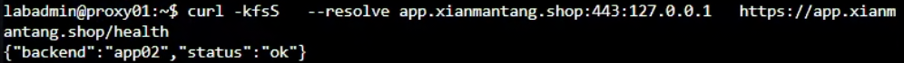
圖（十）以 --resolve 將正式 Hostname 指向本機 TCP 443，成功取得 Web Backend 健康回應
在 proxy02 重複 6.1 與 6.2。兩台的 Hostname、Certificate Path、Nginx Site 與 Real IP 設定必須一致。
6.3 讓 Keepalived 檢查 HTTPS
目前的 check-nginx 只檢查 HTTP。加入公開 HTTPS 後，Web VIP 應該同時反映 Nginx TCP 443 與 HTTPS Health Check。
proxy01 開啟：
sudo nano /usr/local/sbin/check-nginx
完整內容改為：
#!/bin/sh
systemctl is-active --quiet nginx && \
curl -kfsS --max-time 2 \
--resolve app.example.com:443:10.77.20.21 \
https://app.example.com/health >/dev/null
proxy02 使用同一內容，但 --resolve 的 IP 必須是它自己的 10.77.20.22。兩台都要把 app.example.com 改成真實 Hostname。
兩台各自驗證：
sudo chown root:root /usr/local/sbin/check-nginx
sudo chmod 0750 /usr/local/sbin/check-nginx
sudo /usr/local/sbin/check-nginx
echo $?
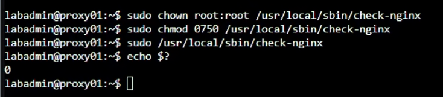
圖（十一）check-nginx 執行後 Exit Code 為 0，代表本機 Nginx 與 HTTPS Health Check 通過
確認 Exit Code 為 0 後，再繼續開放 WAN 443。
7. 在 OPNsense 建立 Cloudflare IPv4 Alias
進入 Firewall → Aliases，按 Add：
- Enabled：勾選。
- Name：
CLOUDFLARE_IPV4。 - Type：
URL Table (IPs)。 - Refresh Frequency：
1Day。 - Content：
https://www.cloudflare.com/ips-v4。 - Description：
Cloudflare published IPv4 proxy ranges。 - 按
Save，再按Apply。
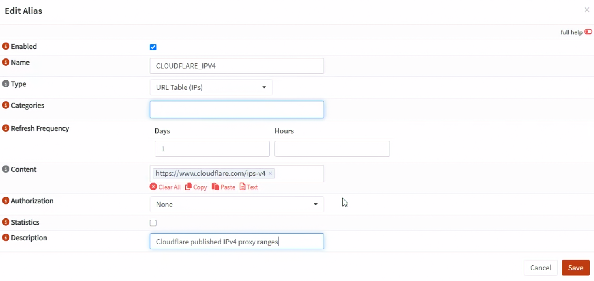
圖（十二）CLOUDFLARE_IPV4 使用 URL Table (IPs)，每日從 Cloudflare 官方網址更新 IPv4 網段
此時先在 Firewall → Aliases 確認 CLOUDFLARE_IPV4 已啟用、Type 與 Content 正確。Firewall → Diagnostics → Aliases 顯示的是已載入 pf 的執行階段 Table；新建 Alias 尚未被規則引用時，左上角選單不一定會出現它。完成下一節的 NAT 與 WAN Rule 並按下 Apply 後，再檢查實際載入內容。
本日的 DDNS Hostname 最終解析至 Origin 公網 IPv4，並建立 IPv4 WAN Rule。Nginx 保留 Cloudflare IPv6 Trusted Proxy 清單，供未來建立完整 IPv6 Origin 路徑時使用。
8. 建立 WAN TCP 443 轉送與過濾規則
8.1 建立 Port Forward
進入 Firewall → NAT → Destination NAT (Port Forward)，按 Add：
- Interface：
WAN。 - TCP/IP Version：
IPv4。 - Protocol：
TCP。 - Source：Alias
CLOUDFLARE_IPV4。 - Source Port：
any。 - Destination：
WAN address。 - Destination Port：
443 (HTTPS)。 - Redirect Target IP：Alias
WEB_VIP（10.77.20.10）。 - Redirect Target Port：
443。 - Log：勾選。
- Description：
DNAT_CF_HTTPS_TO_WEB_VIP。 - 按
Save，先不按Apply。
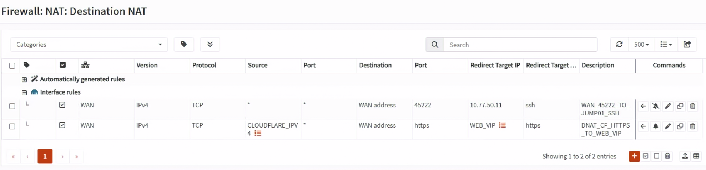
圖（十三）Destination NAT 只接受 CLOUDFLARE_IPV4 來源，並將 WAN TCP 443 轉送到 WEB_VIP
新版 Destination NAT 將原本的 Filter Rule Association 改為 Firewall rule。本次選擇手動建立 WAN Pass Rule，由 NAT 負責目的位址轉換，WAN Rule 負責允許連線。
8.2 建立 WAN Pass Rule
進入 Firewall → Rules，介面明確選 WAN，按 Add：
- Action：
Pass。 - Interface：
WAN。 - Direction：
in。 - TCP/IP Version：
IPv4。 - Protocol：
TCP。 - Source：Alias
CLOUDFLARE_IPV4。 - Destination：Alias
WEB_VIP（10.77.20.10）。 - Destination Port：
443 (HTTPS)。 - Log：勾選。
- Description：
ALLOW_CF_TO_WEB_VIP_HTTPS。 - 按
Save。
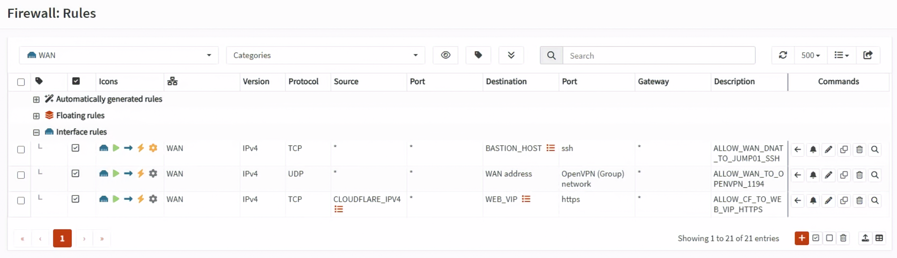
圖（十四）WAN Pass Rule 的來源為 CLOUDFLARE_IPV4，目的地為 WEB_VIP 的 HTTPS
OPNsense 先做 NAT，再用轉換後的 Destination 檢查 Filter Rule，因此這條手動 WAN Rule 的 Destination 填入 10.77.20.10:443。
將 ALLOW_CF_TO_WEB_VIP_HTTPS 放在 WAN 上任何可能先命中的寬鬆 Block／Pass Rule 之前，但不要把來源放寬成 any。本 Lab 依 pf 的隱含 Default Deny 拒絕其他來源，不需要另建一條 any → 443 Block 才會生效。
按 Apply，再重新打開 WAN Rule List，確認規則位於 WAN。本日的 NAT 只選一個 WAN Interface，Pass Rule 也明確建立在 WAN。
8.3 確認 Cloudflare IPv4 Alias 已載入
進入 Firewall → Diagnostics → Aliases。部分 OPNsense 版本會將這個頁面或頁籤標示為 pfTables。在頁面左上角的 Alias 選單選擇 CLOUDFLARE_IPV4，確認下方顯示多個 Cloudflare IPv4 CIDR。
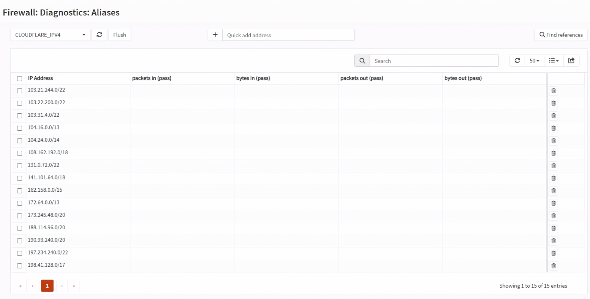
圖（十五）Diagnostics 頁面列出 CLOUDFLARE_IPV4 的多個 CIDR，表示 pf Table 已載入
如果左上角找不到 CLOUDFLARE_IPV4，先回到 Firewall → Aliases 確認下列設定，再按 Save 與 Apply：
- Enabled 已勾選。
- Type 是
URL Table (IPs)。 - Content 完整填入
https://www.cloudflare.com/ips-v4。 - NAT 與 WAN Rule 都已引用
CLOUDFLARE_IPV4。
套用後依然沒有出現時，在 OPNsense Console 或 SSH Shell 執行：
configctl filter refresh_aliases
pfctl -t CLOUDFLARE_IPV4 -T show
第二個命令應列出多個 CIDR。若顯示 Table 不存在，表示 Filter Rule 尚未套用或規則沒有引用此 Alias；若 Table 存在但沒有內容，則檢查 OPNsense 的 DNS、對外 HTTPS 連線，以及 URL 是否輸入正確。
8.4 公網 IPv4 位於上游路由器時
如果 OPNsense WAN 取得的是私有 IPv4，公網 IPv4 實際位於上游路由器，還要在上游路由器新增第一段 Port Forward：
上游路由器公網 IPv4:443
→ OPNsense WAN IPv4:443
→ OPNsense DNAT
→ Web VIP 10.77.20.10:443
上游路由器若支援來源網段條件，也限定為 Cloudflare IPv4 清單；若不支援，至少要由 OPNsense 的 CLOUDFLARE_IPV4 Rule 做最終拒絕。如果 OPNsense WAN 直接持有公網 IPv4，不要再建立這段上游 Port Forward。
9. 啟用 Cloudflare Full (strict)
回 Cloudflare Dashboard，進入 SSL/TLS → Overview，將 Encryption Mode 設為 Full (strict)。
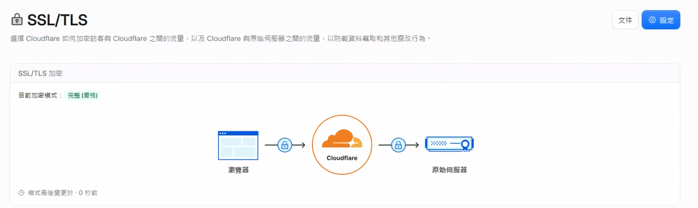
圖（十六）Cloudflare 的目前加密模式為 Full (strict)，Edge 到 Origin 會驗證 Origin 憑證
不使用 Flexible。Flexible 只加密 Client 到 Cloudflare，Cloudflare 到 Origin 仍可能使用 HTTP，不符合本日的雙層 TLS 要求。
使用行動電話行動網路或其他真正外部網路測試：
curl -I --connect-timeout 10 https://app.example.com/
curl -fsS --connect-timeout 10 https://app.example.com/health
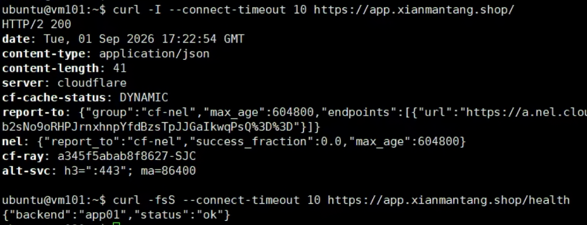
圖（十七）外部請求取得 HTTP 200、server: cloudflare 與 cf-ray，健康檢查同時回傳後端身分
預期 HTTPS 成功，/health 回傳 app01 或 app02。如果 Cloudflare 回傳 526，檢查兩台 Origin Certificate 的有效期、Hostname、憑證鏈與 Nginx server_name；不要改成 Flexible 規避錯誤。
10. 驗證 Origin 只接受 Cloudflare 路徑
這個測試必須從真正外部網路執行。將公開 Hostname 強制指向 Origin 公網 IPv4，保留正確 Host Header 與 TLS SNI：
curl -vk --connect-timeout 5 \
--resolve app.example.com:443:實際Origin公網IPv4 \
https://app.example.com/health
預期結果是 Timeout 或連線被拒，不能取得 HTTP 200。若直連 Origin 成功：
- 檢查 OPNsense NAT 與 WAN Pass Rule 的 Source 是否都是
CLOUDFLARE_IPV4。 - 檢查 WAN 上是否存在較前面的
any → 443 Pass。 - 如果有上游路由器，確認所有公開 TCP 443 封包都會進入 OPNsense。
- 在
Firewall→Log Files→Live View以 Destination Port443與 Description 過濾。
內部 Hairpin NAT 成功或失敗都不能取代這個 WAN 負向測試。
11. 驗證 Real Client IP
從外部網路連續發出數個 Request：
for i in $(seq 1 4); do
curl -fsS https://app.example.com/health
echo
done
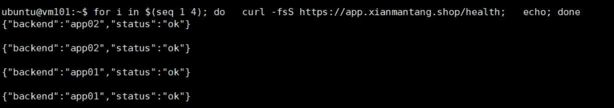
圖（十八）連續公開 HTTPS 請求皆成功，回應中的 backend 顯示 Nginx 將請求分配給 app01 與 app02
在目前持有 Web VIP 的 Proxy 查看 Access Log：
sudo tail -n 20 /var/log/nginx/iron-web-access.log
Log 中的第一個位址應是外部 Client IP，peer= 應是實際與 Nginx 建立 TCP 連線的 Cloudflare Proxy IP。如果兩者都是 Cloudflare IP，檢查 cloudflare-realip.conf；如果直連 Origin 也能任意修改 Client IP，檢查 set_real_ip_from 是否被放寬成任意來源。
12. 驗證 Web VIP 接管後恢復公開連線
先確認 Web VIP 當前在 proxy01：
ip -4 -o address show dev eth0 |
grep '10.77.20.10/24'
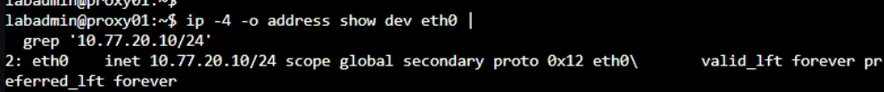
圖（十九）停止服務前先確認 Web VIP 10.77.20.10 由 proxy01 持有
在 proxy01 停止 Nginx：
sudo systemctl stop nginx
在 proxy02 確認 Web VIP 已移入：
ip -4 -o address show dev eth0 |
grep '10.77.20.10/24'
sudo /usr/local/sbin/check-nginx
echo $?
再從外部網路連續測試：
for i in $(seq 1 6); do
date -Is
curl -fsS --connect-timeout 10 https://app.example.com/health
sleep 1
done
預期 Web VIP 移到 proxy02 後 HTTPS 恢復，憑證名稱與 Full (strict) 不因接管而變化。測試結束後在 proxy01 恢復：
sudo systemctl start nginx
sudo /usr/local/sbin/check-nginx
echo $?
等待 Keepalived 狀態穩定後，在兩台確認只有一台持有 10.77.20.10。
13. 回復與停止條件
遇到以下任一情況就停止擴大變更：
- Cloudflare Zone 長時間未變成 Active。
- 原有 Mail、TXT 或其他公開 DNS Record 遺失。
- 任一台 Nginx
nginx -t失敗或 HTTPS Health Check 不是0。 - Cloudflare IP Alias 為空或無法更新。
- Origin Bypass 負向測試取得 HTTP 200。
若 Nginx 設定失敗，在各 Proxy 回復變更前的 Site：
sudo cp -a /etc/nginx/sites-available/iron-web.before-day27 \
/etc/nginx/sites-available/iron-web
sudo nginx -t
sudo systemctl reload nginx
接著在 OPNsense 停用 DNAT_CF_HTTPS_TO_WEB_VIP 與 ALLOW_CF_TO_WEB_VIP_HTTPS。只有在決定放棄 Cloudflare DNS 委派，而且舊 DNS 區域已完整恢復後，才將 GoDaddy Nameserver 改回原值。不要在 DNS 記錄未恢復時只切回 Nameserver。
參考資料
- GoDaddy｜Search and buy available domain names
- GoDaddy｜Verifying contact information for ICANN Validation
- GoDaddy｜What shows in the WHOIS directory?
- GoDaddy｜What is Domain Protection?
- GoDaddy｜Turn my domain auto-renew on or off
- GoDaddy｜Change my domain nameservers
- Cloudflare｜Set up a full DNS zone
- Cloudflare｜Proxy status
- Cloudflare｜CNAME flattening
- Cloudflare｜IPv6 compatibility
- Cloudflare｜Origin CA certificates
- Cloudflare｜Full (strict) encryption mode
- Cloudflare｜Protect your origin server
- Cloudflare｜IP ranges
- OPNsense｜Aliases
- OPNsense｜Network Address Translation
- OPNsense｜Firewall rules
- NGINX｜SSL module
- NGINX｜Real IP module